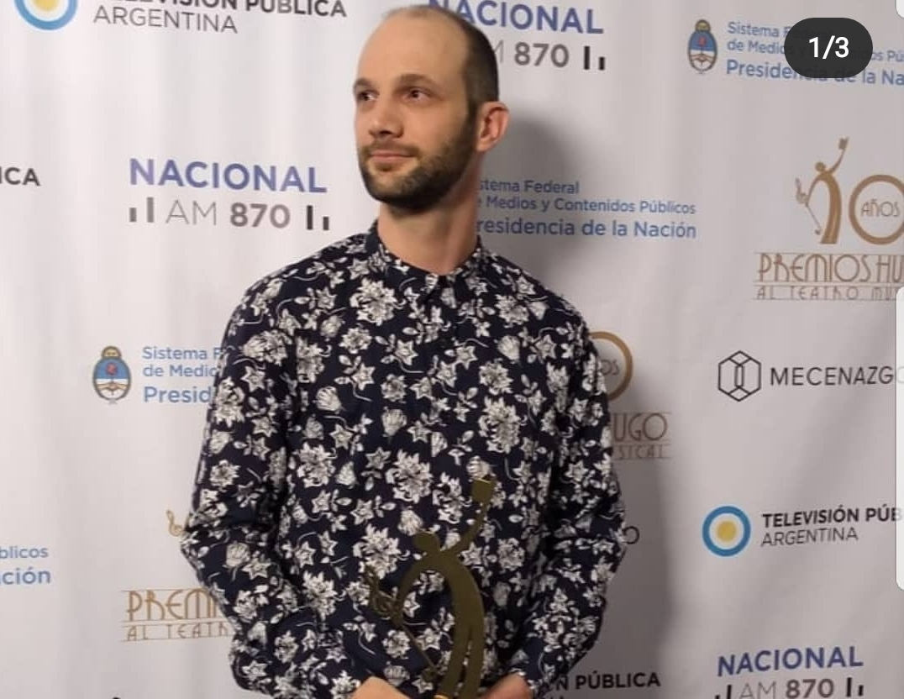

BIOGRAFÍA
Martín Rodríguez nace en Buenos Aires el 27 de Marzo de 1990. En la temprana edad de los 12 años comenzó su incursión en la música de la mano de su actual instrumento principal: La Guitarra.

Impulsado por su hermano y el acercamiento al Heavy Metal comienza su camino como autodidacta del instrumento. Rápidamente la Composición Musical fue donde encontró la mayor conexión con la Música. Durante su adolescencia realizó sus primeras composiciones junto a su amigo Tomás Latorre (Egresado de Berkleey, EEUU). Utilizando el lenguaje de Guitar Pro 5 rápidamente se formó de manera autodidacta en la escritura musical. Hacia el 2009, entra a realizar estudios formales en el Conservatorio de Música Juan José Castro ubicado en la localidad de Martínez. Allí se desarrolló en la carrera de Composición Musical, perfeccionó su escritura musical y ejecución del instrumento.
Comienza a desarrollarse como Productor e Ingeniero de Mezcla de manera autónoma, realizando diversos trabajos para bandas y artistas locales (Vanesa Leiro, Antonella Vicari, Madafank, etc). También comienza su labor como músico sesionista y Director Musical. Entre el 2011 y 2014 se profesionaliza en el armado de Pistas, Beatmaker y Producción mientras dicta clases de Música en un colegio de la zona. Trabajando para artistas independientes e instituciones gana experiencia en el rubro Teatro Musical.
En el 2015 entra como Compositor Musical, junto al Dramaturgo Emiliano Dionisi, a participar de La Bienal de Arte Joven. Donde sus obra desarrollada “Los Monstruos” es producida en el teatro El Picadero, CABA. Por su labor como Compositor, Letrista y Director Musical en “Los Monstruos” es reconocido con una variedad de premios nacionales (ACE, Trinidad Guevara, Florencio Sánchez, Premio Hugo, Argentores). “Los Monstruos” se presenta en Estados Unidos, Chile, Colombia entre otros países. Cuenta con producciones locales en diferentes provincias del país y producciones internacionales (Uruguay, México, entre otras).
Continúa su labor como Productor trabajando con artistas locales como ARZA, Belén Di Lorio, Jun Pablo Schapira, entre otros. En 2017 compone y dirige musicalmente el espectáculo “Cyrano, de más acá” para el Teatro Nacional Cervantes.
A finales del 2019 recibe variadas distinciones por dos espectáculos en donde participa como compositor y director. “Recuerdos a la hora de la siesta” basada en la obra de María Elena Walsh en el Teatro San Martín y “El Arrebato” para el FIBA. También dirige e interpreta el espectáculo “La Llamada” de España. Durante el 2020 y el 2021 estudia Mezcla y Masterización en el Instituto Orion con Pablo Ravinovich. Compone distintos espectáculos en donde confecciona las Pistas y dirige musicalmente. Actualmente se encuentra trabajando en la nueva composición de una obra llama “La Cuidadora” a estrenarse bajo el Teatro San Martín. En paralelo supervisa el nuevo proyecto del Ballet Folclórico Nacional .